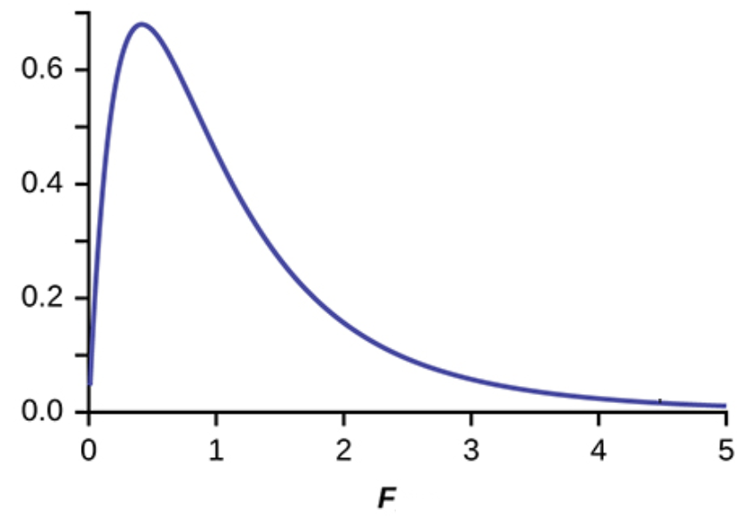
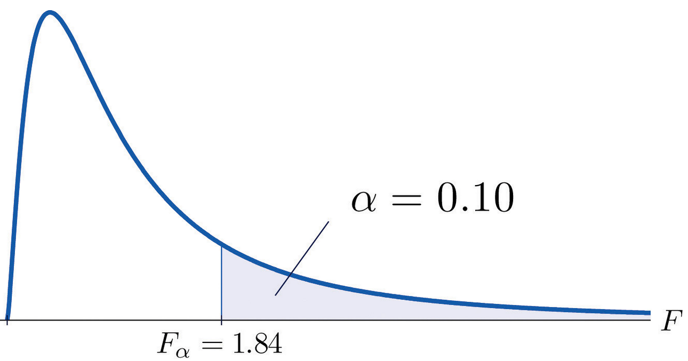
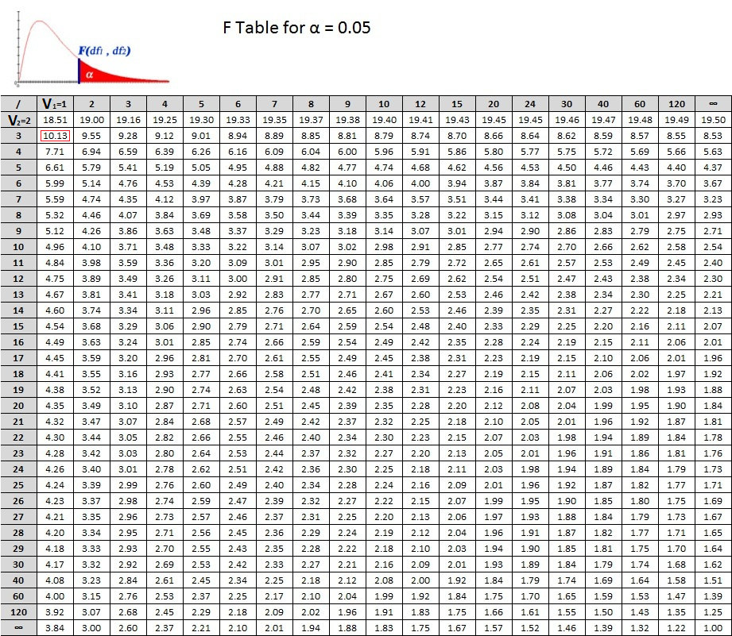
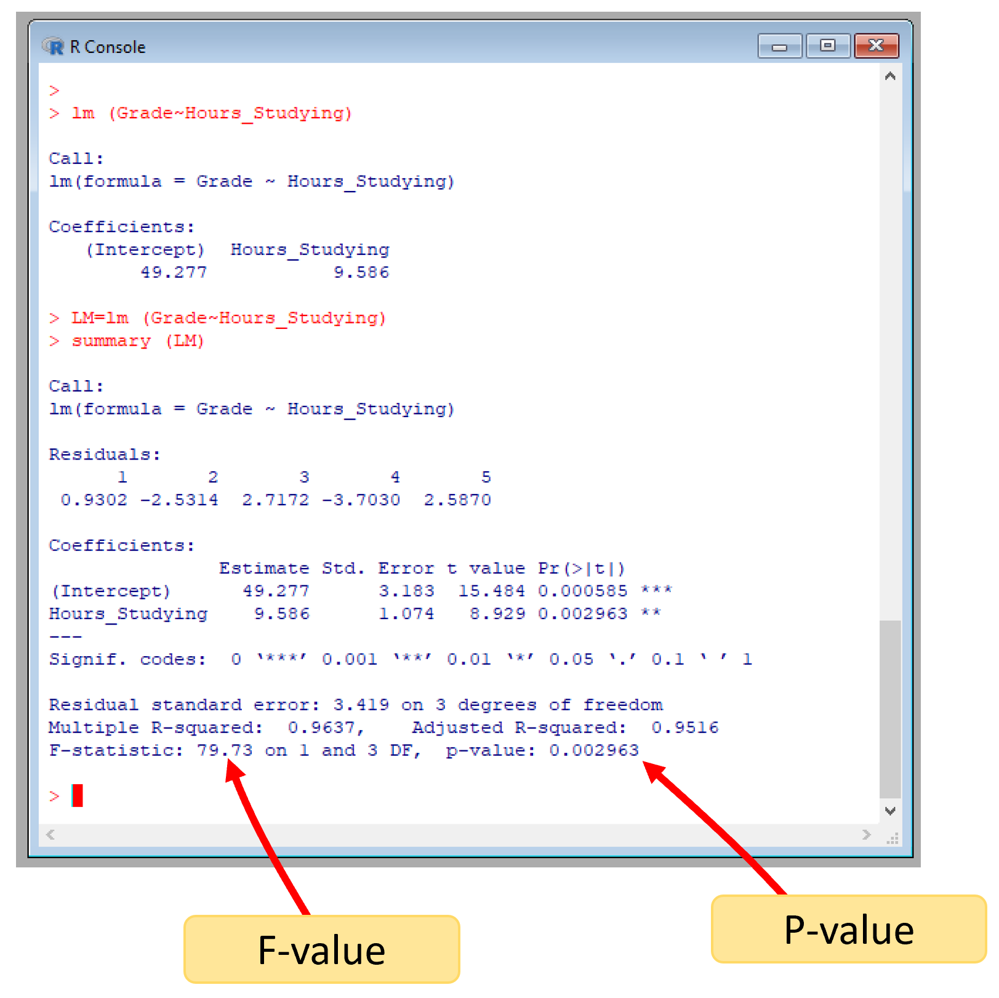

The significance
Several times in this book, we have mentioned how there is always a chance that any result can arise by chance alone. The linear regression model is not different. There may still be a chance that you find an \(r^2\) similar to the one you found if you did not use any independent variable at all.
To rule out that possibility, we use what is called an F-test. We will review the F-statistics in more detail later in the Chapter about hypothesis testing.
Basically, some people have taken the time to run millions of simulations of “fake” “random” datasets, created linear models with them with varying sample sizes and number of parameters, and estimated the fitness of those models. Then, they put the results of those “random” models in F-tables, which you can find at the end of most books on stats.
The beauty of those tables is that you can compare your model, given the number of samples and the number of variables, to find out the fraction of models similar to yours that could have happened by chance.
To compare your model to theirs, you need:
- the F-value from your model, which we will get into in a sec.
- the number of variables in your model (for the purpose of comparison to the their tables, we will call this value \(v1\))
- A parameter, we will call \(v2\), which is the number of datapoints in the model minus the number of predictors in the model plus one.
\(v1\) and \(v2\) are just parameters needed to compare to random models of similar parameters.
If your model is similar to theirs, then, your results could have emerged by simple chance. If your results were different, then the relationship you found is legit. We will work more on this later on.
Ok, but we need to estimate the F-Value of our model. There is an specific equation to calculate the F-value or F-statistics of a linear regression model. However, it can also be predicted using the \(r^2\), which we will use here for simplicity, using the following equation:
\[\begin{equation} F_{statistics} = \frac{r^2}{1-r^2} *\frac{v2}{v1} \end{equation}\]
Where \(r^2\), is the coefficient of determination; \(v1\) is number of predictors in the model; \(v2\) is the number of datapoints minus the number of predictors in the model plus one.
If you think about that formula above, you are estimating an standard metric of the variance explained, \(r^2\), to the variance not explained, \(1-r^2\), for a model of certain characteristics of sample size and variables used.
Because the most variance you can explain in any case is always just 100%, this metric could be assumed standard among any model random or not. And that is how then, we can compare our results on legit data to fake data, and see if any result of ours is different from random.
With all parameters at hand for our model, we need to look into an F-table to estimate the critical F-value. A critical F-value is the expected F-value at which certain fraction of random models occur. Let’s take a moment to understand this.
Image a statistician runs one million regressions with random data using certain number of samples and independent variables and for each model he estimates the F-value above. He then creates a frequency distribution of the number of models at each F-value, like the figure below.

Figure 7.10: F-distribution
From that distribution, you can now find out the F-value at which say 90% of the random models occur; that value is the critical F-value, like in the image below.
If say our model has an F-value larger than that critical F-value then we are 90% sure our model cannot have emerge by chance.
Alternatively, you could say our model is significant at p>0.1, which is the complement of 90% or 0.9 if you look at it as fractions. That p-value is also called the critical p-value or at times also named alpha, \(\alpha\).

Figure 7.11: Critical f-Value at 90% or p=0.1
Lets estimate the F-value for our regression model between grades and time studying, for which we know the \(r^2\) was \(0.96\). \(v1\), the number of predictors in the model would be 1, as we only have one independent variable (i.e., time studying) and, \(v2\) is 3; If you recall \(v2\) is the number of datapoints (five student) minus the number of predictors (one in our case) plus one. So
\[\begin{equation} F_{statistics} = \frac{0.96}{1-0.96} *\frac{3}{1} \end{equation}\]
\[\begin{equation} F_{statistics} = 79.7259164 \end{equation}\]
So the F-value for our model was \(79.73\). Now we need to find out the critical F-value, and lets take a \(\alpha =0.05\). For this we use an F-table, like the one below, which you can find on most books on stats.
Because \(v1\) = 1 in our case, you have to select the first column, then scroll down until \(v2\) in the gray column is equal to 3, at the interception is the F-critical. Or the F-value at which 95% of the random models occurred. There are similar tables like this for each \(\alpha\).
So for a model like ours, 95% of the random models should have an critical F-value smaller than 10.13. However, our model had an F-value = 79.7259164. So our model is very different from the random expectation, or also-called significantly different at p>0.05.

Figure 7.12: lm outputs
In R, the F-value is produced automatically with the \(lm\) function and the \(summary\) function. The outputs from the linear model, lm, also include the exact probability at which our model could be random, see image below.

Figure 7.13: lm outputs
In conclusion, there is a significantly strong relations (\(r^2 = 0.96\)) at p<0.05 between studying for my class and getting a nice grade. There you go, keep studying.